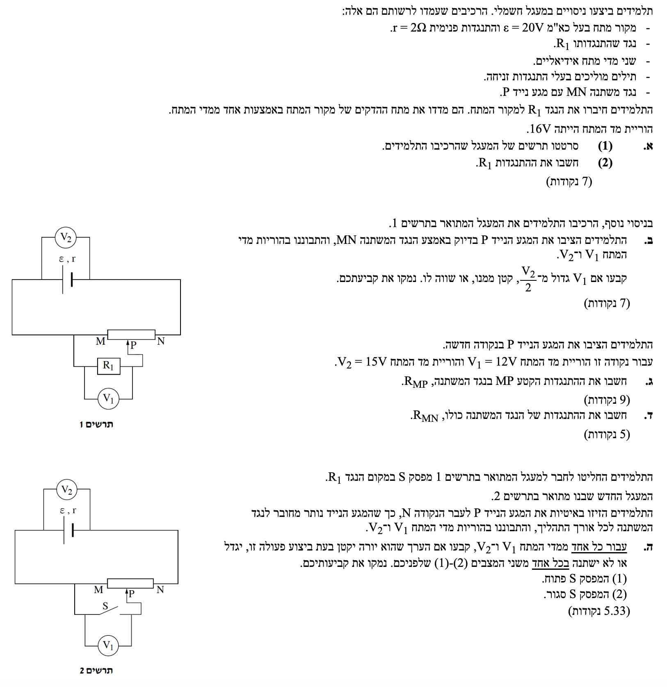

פתרון בגרות בפיזיקה: חשמל
שאלון חשמל - מעגלי זרם ישר
פתרון מלא, מודרך ומוסבר צעד-אחר-צעד
עודכן:
--- --:--:--

[תמונת השאלה המקורית]
לא נמצאה תמונה בשם question-image.png באותה תיקייה.
מה נתון:
- כא"מ מקור המתח: \(\varepsilon = 20\text{ V}\).
- התנגדות פנימית של המקור: \(r = 2\Omega\).
- בניסוי הראשון, רק הנגד \(R_1\) מחובר למקור (מעגל טורי פשוט).
- הוריית מד המתח (שמודד את מתח ההדקים בניסוי זה): \(V_{ab} = 16\text{ V}\).
- שלב 0 - המרת יחידות (MKS): כל הנתונים הניתנים הינם במערכת היחידות התקנית (וולט, אוהם), ולכן אין צורך בהמרות.
מה מחפשים:
(1) לסרטט את תרשים המעגל הבסיסי.
(2) לחשב את התנגדות הנגד \(R_1\).
נוסחאות ועקרונות בשימוש:
\( V_{ab} = \varepsilon - I \cdot r \) (נוסחת מתח הדקים)
\( V = RI \) (חוק אוהם)
הצבה ופתרון:
(1) תרשים המעגל:
(2) חישוב ההתנגדות:
ראשית, נמצא את הזרם הכולל במעגל מתוך משוואת מתח ההדקים:
\[ V_{ab} = \varepsilon - I \cdot r \]
\[ 16 = 20 - I \cdot 2 \]
\[ 2I = 4 \implies I = 2.00 \text{ A} \]
כעת, מכיון שמתח ההדקים הוא גם המתח שנופל על הנגד היחיד במעגל החיצוני, נציב בחוק אוהם המופיע בדף הנוסחאות כדי לחשב את \(R_1\):
\[ V_{ab} = R_1 \cdot I \]
\[ 16 = R_1 \cdot 2.00 \]
\[ R_1 = 8.00 \Omega \]
טיפ מורה: במעגל פשוט, מתח ההדקים של המקור שווה בדיוק למתח שנופל על הנגד. מדוע?
חשוב להבחין בין פוטנציאל לבין מתח (שהוא למעשה הפרש פוטנציאלים בין שתי נקודות).
חוטי החיבור במעגל הם אידיאליים והתנגדותם שווה לאפס, ולכן הפוטנציאל החשמלי לא משתנה לאורכם.
הפוטנציאל בנקודה A (ההדק החיובי) זהה לחלוטין לפוטנציאל בנקודה C (צידו הימני של הנגד).
באופן דומה, הפוטנציאל בנקודה B (ההדק השלילי) זהה לפוטנציאל בנקודה D.
מכאן שהפרש הפוטנציאלים בין A ל-B (מתח ההדקים) חייב להיות שווה להפרש הפוטנציאלים בין C ל-D (המתח על הנגד).
מה נתון:
- התלמידים הרכיבו את המעגל בתרשים 1 (מעגל מחלק מתח).
- המגע הנייד \(P\) הוצב בדיוק באמצע הנגד המשתנה \(MN\).
- מכאן נובע שההתנגדות של שני חלקי הנגד המשתנה שווה: \( R_{MP} = R_{PN} \).
- מד המתח \(V_2\) מודד את מתח ההדקים הכולל של המקור.
- מד המתח \(V_1\) מחובר במקביל לנגד \(R_1\), ולכן מודד את המתח עליו. שימו לב מהתרשים ש-\(R_1\) מחובר במקביל לקטע \(MP\).
מה מחפשים:
לקבוע אם הוריית \(V_1\) גדולה, קטנה או שווה ל- \(\frac{V_2}{2}\), ולנמק.
נוסחאות ועקרונות בשימוש:
\( \Sigma I = 0 \) (חוק הצמתים של קירכהוף - התפצלות הזרם)
\( V = RI \) (חוק אוהם)
הצבה ופתרון:
שלב 1: הבנת המעגל השקול
כדי לנתח את המעגל בקלות, נצייר עבורו מעגל שקול. הנגד המשתנה הוא למעשה חוט מוליך בעל התנגדות. כאשר אנו מניחים את המגע הנייד (P) באמצע הנגד, אנו למעשה מחלקים את החוט לשני קטעים, אותם ניתן להתייחס כשני נגדים נפרדים המחוברים ביניהם בחוט אידיאלי:
- החלק הראשון (MP): הזרם מגיע לנקודה M ויכול להתפצל - חלק יזרום דרך הנגד \(R_1\) וחלק יזרום דרך החוט של הקטע MP. מכיוון ששני המסלולים הללו מתחילים ב-M ונפגשים שוב ב-P, הם מחוברים במקביל.
- החלק השני (PN): לאחר שהזרמים התאחדו בנקודה P, כל הזרם הראשי חייב להמשיך לזרום דרך שארית החוט, הקטע PN, עד לנקודה N כדי לחזור לסוללה. לכן הקטע PN מחובר בטור לחלק המקבילי.
שלב 2: ניתוח הזרמים והמתחים
ננתח את המעגל באמצעות הזרמים הזורמים בו. הזרם הראשי של המעגל (נסמנו ב-\(I_{tot}\)) זורם כולו דרך החלק הטורי, כלומר דרך הקטע PN. לכן הזרם עליו הוא:
\[ I_{PN} = I_{tot} \]
לעומת זאת, כאשר הזרם הראשי מגיע לצומת M, הוא מתפצל לשני ענפים המחוברים במקביל: הנגד \(R_1\) וקטע החוט \(MP\). על פי חוק שימור המטען (חוק הצמתים), הזרם הזורם רק דרך הקטע MP חייב להיות קטן מהזרם הראשי:
\[ I_{MP} < I_{tot} \implies I_{MP} < I_{PN} \]
מכיוון שהמגע הנייד נמצא בדיוק באמצע, ההתנגדויות של שני חלקי הנגד המשתנה שוות (\(R_{MP} = R_{PN}\)). על פי חוק אוהם (\(V = RI\)), המתח על נגד נמצא ביחס ישר לזרם העובר דרכו. מאחר שעל הקטע MP זורם זרם קטן יותר מאשר על הקטע PN (בעוד שהתנגדותם זהה), המתח עליו יהיה בהכרח קטן יותר:
\[ V_{MP} < V_{PN} \implies V_1 < V_{PN} \]
סכום המתחים על שני החלקים יחד שווה למתח הכולל של המעגל החיצוני (\(V_2\)):
\[ V_2 = V_1 + V_{PN} \]
אם סכום שני חלקים שווה ל-\(V_2\), וחלק אחד (\(V_1\)) קטן מהחלק השני, נובע בהכרח שהחלק הקטן מביניהם מהווה פחות מחצי מהסכום הכולל:
\[ V_1 < \frac{V_2}{2} \]
מסקנה: \(V_1\) קטן מ-\(\frac{V_2}{2}\)
טיפ מורה: כלל זהב בניתוח מעגלי זרם ישר: נתקלתם במעגל בעל צורה מבלבלת או רכיבים מורכבים כמו פוטנציומטר? ציירו אותו מחדש כמעגל שקול של נגדים "רגילים" בטור ובמקביל (כפי שעשינו בשלב 1). המוח שלנו מנתח תבניות פשוטות הרבה יותר טוב מאשר רשתות של חוטים סבוכים. השרטוט מחדש לוקח רק חצי דקה, אך הוא מונע כמעט לחלוטין טעויות בזיהוי ענפים בטור ובמקביל.
מה נתון:
- הזיזו את המגע P לנקודה חדשה.
- במצב זה, הוריית \(V_1\) היא: \( V_1 = 12\text{ V} \). מתח זה הוא על \(R_1\) וגם על \(R_{MP}\).
- הוריית \(V_2\) (מתח ההדקים) היא: \( V_2 = 15\text{ V} \).
- חישבנו בסעיף א': \(R_1 = 8\text{ }\Omega\), \(r = 2\text{ }\Omega\), \(\varepsilon = 20\text{ V}\).
מה מחפשים:
לחשב את ההתנגדות של קטע הנגד המשתנה \(R_{MP}\).
נוסחאות ועקרונות בשימוש:
\( V_{ab} = \varepsilon - I \cdot r \)
\( V = RI \) (חוק אוהם)
\( \Sigma I = 0 \) (חוק הצמתים של קירכהוף)
הצבה ופתרון:
שלב 1: מציאת הזרם הכולל
נמצא את הזרם הכולל היוצא מהמקור (\(I_{tot}\)) בעזרת משוואת מתח ההדקים:
\[ V_2 = \varepsilon - I_{tot} \cdot r \]
\[ 15 = 20 - I_{tot} \cdot 2 \]
\[ 2I_{tot} = 5 \implies I_{tot} = 2.50 \text{ A} \]
שלב 2: מציאת הזרם בנגד \(R_1\)
הזרם הזורם דרך הנגד \(R_1\) (נסמנו \(I_1\)) יחושב בעזרת חוק אוהם, שכן אנו יודעים את המתח עליו (\(V_1\)):
\[ V_1 = R_1 \cdot I_1 \]
\[ 12 = 8.00 \cdot I_1 \implies I_1 = 1.50 \text{ A} \]
שלב 3: חוק הצמתים בנקודה M
הזרם הראשי מתפצל לשני הענפים (דרך \(R_1\) ודרך \(R_{MP}\)):
\[ I_{tot} = I_1 + I_{MP} \]
\[ 2.50 = 1.50 + I_{MP} \implies I_{MP} = 1.00 \text{ A} \]
שלב 4: מציאת ההתנגדות \(R_{MP}\)
אנו יודעים שהמתח עליו הוא \(V_1\) (כי הוא במקביל ל-\(R_1\)) והזרם דרכו הוא 1.00A. נציב בחוק אוהם:
\[ V_{MP} = R_{MP} \cdot I_{MP} \]
\[ 12 = R_{MP} \cdot 1.00 \]
\[ R_{MP} = 12.0 \Omega \]
טיפ מורה: תמיד עשו "בדיקת שפיות" לתוצאה שלכם כדי לאתר טעויות חישוב מוקדם! איך נדע ש- $12\Omega$ זו תוצאה הגיונית? הסתכלו על צומת ההתפצלות M: מצאנו שדרך הנגד $R_1$ זורם זרם של $1.5\text{A}$, ואילו דרך הקטע $MP$ זורם זרם קטן יותר של $1.0\text{A}$. הזרם החשמלי מתחלק כך שתמיד חלק גדול יותר ממנו זורם במסלול בעל ההתנגדות הקטנה יותר. מכיוון שדרך $R_{MP}$ עבר פחות זרם, ההתנגדות שלו חייבת להיות גדולה מההתנגדות של $R_1$ (שהיא $8\Omega$). יצא לנו $12\Omega$ שזה אכן גדול מ-8, ולכן התשובה שלנו מתיישבת עם ההיגיון הפיזיקלי! אם היה יוצא לכם ערך קטן מ-8, הייתם יודעים מיד שיש טעות.
מה נתון:
- התנגדות המקטע הראשון: \(R_{MP} = 12.0\text{ }\Omega\).
- המתח הכללי (מתח ההדקים): \(V_2 = 15\text{ V}\).
- המתח על המקטע המקבילי (M ל-P): \(V_1 = 12\text{ V}\).
- הזרם הראשי החוזר דרך מקטע PN: \(I_{tot} = 2.50\text{ A}\).
מה מחפשים:
את ההתנגדות הכוללת של הנגד המשתנה, כלומר \(R_{MN}\).
נוסחאות ועקרונות בשימוש:
\( \Sigma V = 0 \) (חוק קירכהוף למתחים - מתח כולל על מקטעים בטור)
\( V = RI \) (חוק אוהם)
\( R_T = \Sigma R_i \) (התנגדות שקולה בטור)
הצבה ופתרון:
נגד משתנה מורכב למעשה משני נגדים (\(R_{MP}\) ו- \(R_{PN}\)) המחוברים בטור זה לזה (לפחות מבחינה מבנית של התיל המרכיב אותם). לכן ההתנגדות הכוללת שלו היא סכום התנגדויות שני קטעיו:
\[ R_{MN} = R_{MP} + R_{PN} \]
חסר לנו ערכו של \(R_{PN}\). נחשב את המתח עליו. אנו יודעים שהמתח הכולל של המעגל החיצוני (\(V_2\)) מתחלק בין החלק המקבילי (עליו נופל מתח \(V_1\)) לבין החלק הטורי (\(R_{PN}\)):
\[ V_2 = V_{MP} + V_{PN} \]
\[ 15 = 12 + V_{PN} \implies V_{PN} = 3.00 \text{ V} \]
כל הזרם הראשי שמגיע מהמקור חייב לעבור בסופו של דבר דרך המקטע PN כדי לחזור למקור. לכן הזרם דרכו הוא \(I_{tot} = 2.50\text{A}\). נחשב את ההתנגדות שלו בעזרת חוק אוהם:
\[ V_{PN} = R_{PN} \cdot I_{tot} \]
\[ 3.00 = R_{PN} \cdot 2.50 \implies R_{PN} = 1.20 \Omega \]
כעת נוכל לחשב את ההתנגדות הכוללת של הנגד המשתנה:
\[ R_{MN} = 12.0 + 1.20 \]
\[ R_{MN} = 13.2 \Omega \]
טיפ מורה: תמיד חשוב לזכור שהנגד המשתנה השלם מיוצג פיזית על ידי תיל מוליך בעל אורך קבוע. הזזת המגע הנייד אינה משנה את ההתנגדות הכוללת של הרכיב (שכאן ראינו שהיא תמיד תישאר 13.2 אוהם), אלא רק את החלוקה הפנימית בין שני החלקים (MP ו-PN).
מה נתון:
- המעגל הוחלף לתרשים 2: הנגד \(R_1\) הוסר, ובמקומו חובר מפסק \(S\).
- המגע הנייד P מוזז איטית לעבר הנקודה N. משמעות פעולה זו מבחינה גיאומטרית היא שאורך המקטע MP גדל, בעוד שאורך המקטע PN קטן.
- מצב (1): המפסק S פתוח (נתק).
- מצב (2): המפסק S סגור (קצר).
מה מחפשים:
עבור כל אחד משני המצבים (פתוח/סגור), יש לקבוע אם קריאות מדי המתח \(V_1\) ו-\(V_2\) יגדלו, יקטנו או לא ישתנו, ולנמק.
נוסחאות ועקרונות בשימוש:
\( R = \rho \frac{l}{A} \) (קשר בין אורך התיל להתנגדות)
\( I = \frac{\varepsilon}{R_T + r} \) (חוק אוהם למעגל שלם)
\( V_{ab} = \varepsilon - I \cdot r \) (מתח הדקים)
הצבה ופתרון:
מצב (1) - המפסק S פתוח
כאשר S פתוח, הענף התחתון מנותק ואינו מעביר זרם. המעגל הוא מעגל טורי פשוט הכולל את מקור המתח ואת מלוא הנגד המשתנה MN (הזרם זורם מ-M ל-N במלואו).
- הוריית \(V_2\) (מתח הדקים): ההתנגדות הכוללת של המעגל החיצוני קבועה ושווה ל-\(R_{MN} = 13.2\Omega\). לכן, הזרם הראשי \(I\) קבוע. על פי הנוסחה \(V_2 = \varepsilon - I \cdot r\), מכיוון שהזרם קבוע, גם מתח ההדקים לא ישתנה.
- הוריית \(V_1\): מד מתח אידיאלי מהווה בעצמו נתק, כך שהזרם אינו זורם דרך המד. \(V_1\) מחובר בפועל בין הנקודות M ו-P, כלומר הוא מודד את מפל המתח על הקטע \(MP\). על פי חוק אוהם: \(V_1 = I \cdot R_{MP}\). כאשר המגע P נע לעבר N, אורך הקטע MP גדל, ולכן ההתנגדות \(R_{MP}\) גדלה. מכיוון שהזרם \(I\) קבוע, קריאת \(V_1\) תגדל.
מצב (2) - המפסק S סגור
כאשר S סגור, הוא יוצר "קצר" (תיל חסר התנגדות) בין הצמתים M ו-P. הזרם החשמלי "יעדיף" לזרום כולו דרך המפסק, ולעקוף את הקטע של הנגד המשתנה \(R_{MP}\). לכן הקטע MP אינו פעיל, וההתנגדות החיצונית של המעגל כולו היא רק של הקטע \(R_{PN}\).
- הוריית \(V_1\): מד המתח מחובר במקביל למפסק סגור (תיל בעל התנגדות אפס). המתח על קצר הוא תמיד אפס (כי \(V=I\cdot 0 = 0\)). לכן, לכל אורך התנועה, \(V_1\) יראה 0 וולט, כלומר לא ישתנה.
- הוריית \(V_2\) (מתח הדקים): ההתנגדות הכוללת של המעגל במצב זה היא ההתנגדות הפנימית \(r\) וההתנגדות החיצונית \(R_{PN}\). כאשר מזיזים את המגע P לעבר N, אורך הקטע PN הולך וקטן. לכן ההתנגדות החיצונית \(R_{PN}\) קטנה.
כתוצאה מכך, גודל הזרם הראשי במעגל (\(I = \frac{\varepsilon}{R_{PN} + r}\)) יגדל.
לפי משוואת מתח ההדקים \(V_2 = \varepsilon - I \cdot r\), מאחר והזרם \(I\) גדל, האיבר המוחסר עולה, ולכן מתח ההדקים \(V_2\) יקטן.
מצב 1: \(V_1\) יגדל, \(V_2\) לא ישתנה.
מצב 2: \(V_1\) לא ישתנה, \(V_2\) יקטן.
טיפ מורה: בבעיות רבות בפיזיקה, תנועה של מגע נייד או הוספת/הסרת רכיבים משנה את ההתנגדות הכוללת של המעגל. סדר הפעולות לניתוח צריך תמיד להיות:
1. מה קרה להתנגדות השקולה של המעגל?
2. איך זה השפיע על הזרם הראשי?
3. איך זה משפיע על מתח ההדקים (היחס הוא תמיד הפוך לזרם הראשי!).